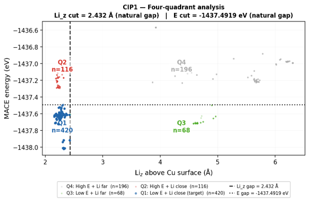
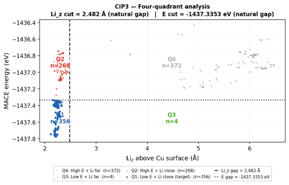
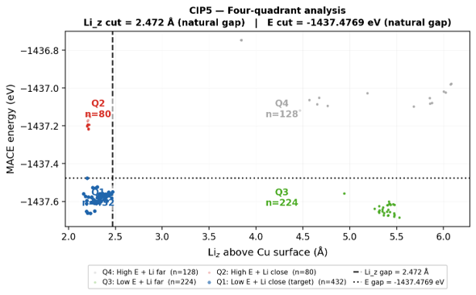
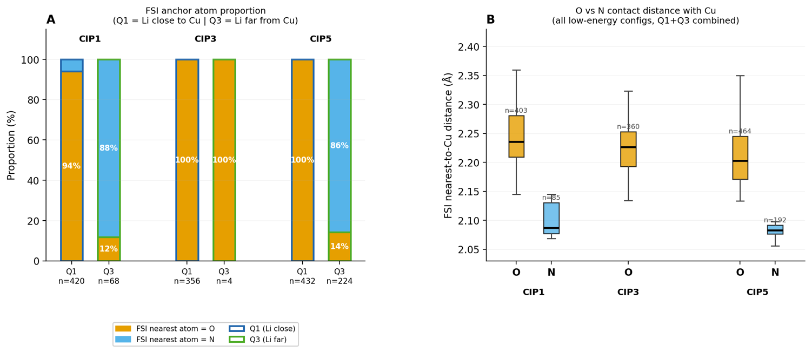
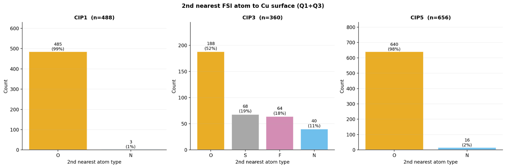
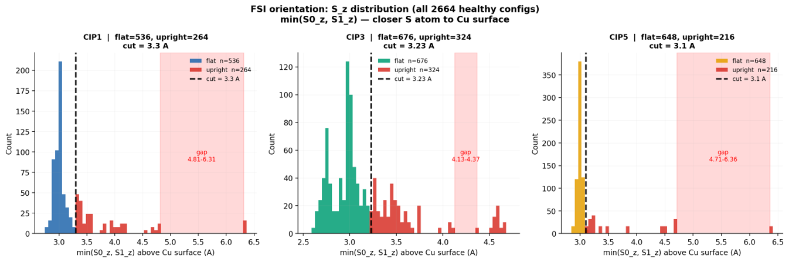
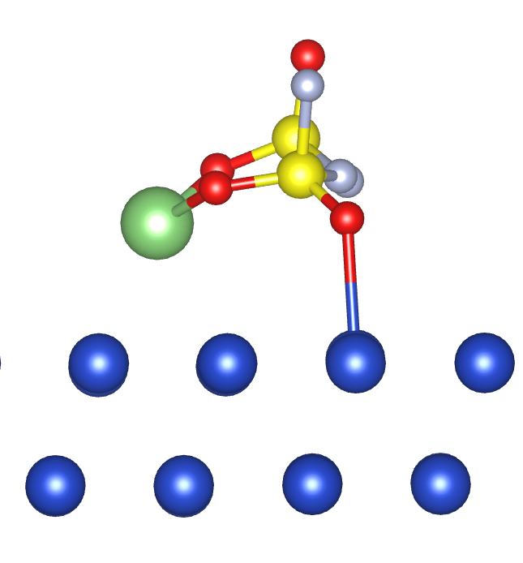
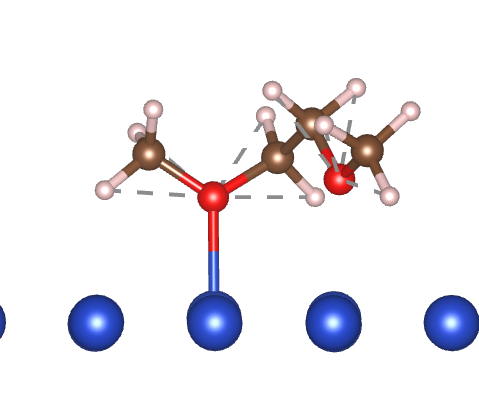

CASE STUDY · 3D ADSORPTION CONFIGURATION SCREENING
从 2948 个三维分子吸附构型中，建立分层筛选流程并选出具有物理代表性的候选结构
为研究电解质分子在铜界面的潜在反应行为，我系统覆盖不同吸附位点、锚点原子、分子构象、取向及可能的解离状态，并将大规模候选压缩为可进入后续高精度分析的代表构型。
2948初始三维吸附构型
→
1208低能且 Li 接近 Cu 的 Q1 构型
→
2公开展示的代表构型示例
01 · TASK CONTEXT
为什么一个分子会产生近 3000 个界面模型？
一个电解质分子放到金属表面时，并不存在唯一放置方式。为了避免只研究某一种主观构型，需要系统采样影响界面状态的主要自由度。
⬡ + ▤
电解质分子 + Cu 表面
界面反应研究对象
→
不同表面吸附位点分子放置在 Cu 表面的不同位置
不同锚点原子选择分子中不同原子靠近表面
不同分子构象覆盖内部弯曲与扭转状态
不同吸附取向平躺、倾斜、直立等方向
可能的解离状态初步优化后出现的断键或脱附行为
→
2948
初步优化构型
需要进一步分层筛选
02 · SCREENING FUNNEL
先分流结构异常，再用物理条件逐步缩小主研究范围
漏斗不是简单删除数据：不同异常被送往不同去向；进入主流程的构型则继续接受界面距离、能量和代表性分析。
2948
初始三维吸附构型
覆盖不同位点、锚点、构象、取向与可能的解离状态。
STEP 1
结构完整性与界面有效性检查
依据 S–F、S–N 键长及构型与 Cu 表面的距离，识别断键与脱附。
1208
Q1：低能且 Li 接近 Cu
在三个研究体系中，以 Li–Cu 距离和构型能量联合确定主研究对象。
2
公开构型示例
从最终代表构型中仅展示两个示例，避免公开过多未发表结构细节。
03 · FOUR-QUADRANT DECISION
用 Li–Cu 距离与构型能量联合定义主研究对象
距离回答“是否形成目标界面状态”，能量回答“该状态是否具有较高稳定性”。Q1 同时满足两项条件，因此进入后续代表性分析。


四个区域分别意味着什么
Q1
低能 + Li 接近 Cu同时满足稳定性与目标界面状态，作为主研究对象。
Q2
高能 + Li 接近 Cu界面位置符合，但热力学优先级较低。
Q3
低能 + Li 远离 Cu作为不同界面状态保留观察，不与 Q1 混为同一类。
Q4
高能 + Li 远离 Cu两项核心条件均不满足，研究优先级最低。
1208
Q1 主研究构型
CIP1 420 + CIP3 356 + CIP5 432
这里不是只选择“最低能”，而是同时要求 Li 足够靠近 Cu 表面，确保筛选结果对应目标界面状态。
04 · REPRESENTATIVE ANALYSIS
进一步分析锚点与接触模式，避免最终结果只代表一种吸附方式
进入低能区域后，仍需判断分子通过哪个原子接近表面、是否存在不同配位方式，以及不同取向是否都得到覆盖。

Q1 整体以 O 锚定为主
CIP3 与 CIP5 的 Q1 构型均为 100% O 最近表面；CIP1 中 O 也占 94%。
Q3 在部分体系中呈现 N 锚定转变
CIP1 与 CIP5 的 Q3 中，N 最近表面的比例分别达到 88% 与 86%。这说明 Q3 不只是“距离更远”，还伴随不同的分子朝向与接触方式。
小样本不作过度解释
CIP3 的 Q3 仅有 4 个样本，因此不将其 100% O 比例视为稳定规律。
接触距离作为补充证据
O 与 N 最近表面距离的分布不同，可辅助判断不同锚定模式是否真实存在。
展开查看：第二近邻原子与配位模式证据

CIP1 与 CIP5 的第二近邻几乎均为 O，表明双 O 接触模式占主导；CIP3 的第二近邻类型更分散，说明其接触构型更加多样。该结果可用于决定最终代表构型应覆盖哪些配位类别。
展开查看：平躺与直立取向的分布

三个体系均以平躺取向为主，但仍存在数量不可忽略的直立取向。最终代表集不应只保留数量最多的平躺构型，也应覆盖具有不同界面几何特征的少数取向。
05 · FINAL SET
成果之二：代表构型如图所示
为避免公开过多未发表结构细节，本页只展示两个代表构型示例，用于说明筛选结果的形态和界面接触特征。

代表构型示例 01公开示例 · 界面吸附构型
代表构型示例 02公开示例 · 界面吸附构型CASE TAKEAWAY
我将一个规模庞大、缺少唯一标准的三维结构问题，转化为由物理条件逐层约束、结果可解释且可复核的筛选流程。
筛选过程中，我不仅压缩候选数量，也区分了主研究对象、潜在解离分支和特殊界面状态，并通过锚点、配位及取向分析控制最终结果的代表性。
大规模结构数据筛选
多指标联合判定
异常分流
证据驱动解释
结果边界控制